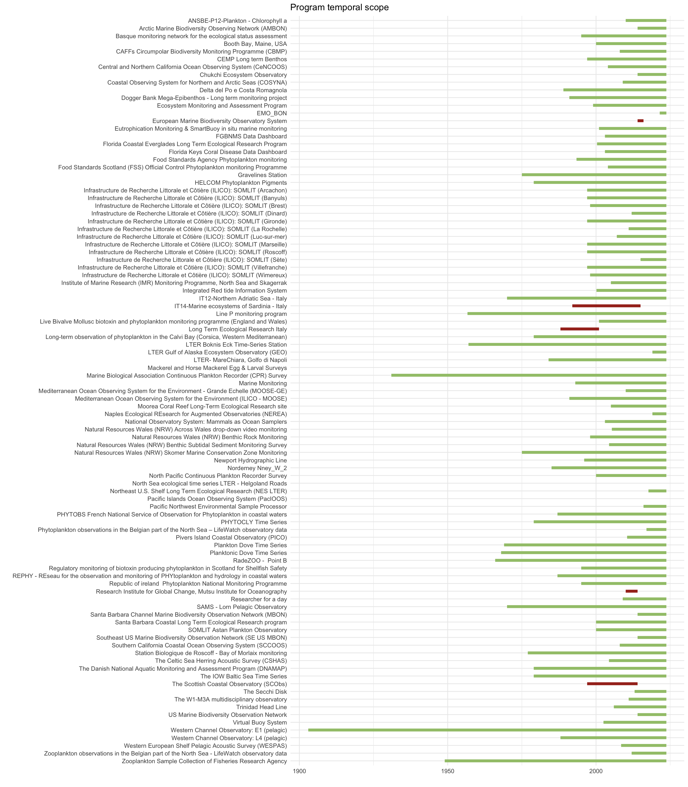
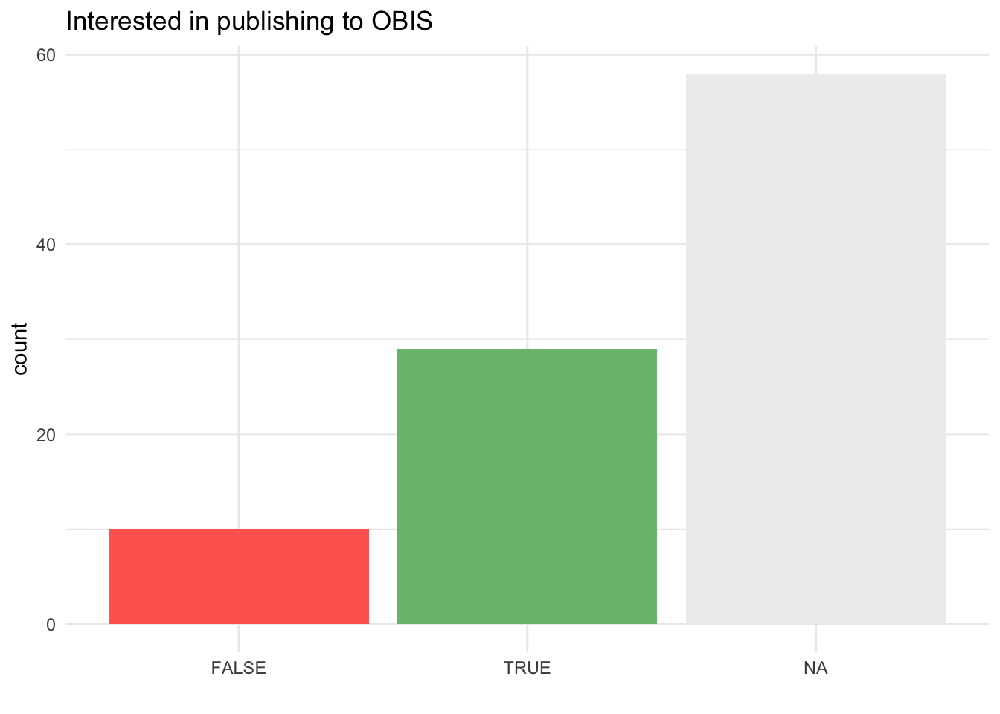

Plankton programs in the GOOS BioEco portal
Visualize all plankton programs
Read all phytoplankton and zooplankton programs and visualize on a map:
library(sf)
library(dplyr)
library(glue)
library(ggplot2)
library(rnaturalearth)
library(rnaturalearthdata)
sf_use_s2(FALSE)
keywords <- c(35, 36)
keywords_encoded <- URLencode(paste0(keywords, collapse = "\\,"), reserved = TRUE)
url <- glue("https://geonode.goosocean.org/geoserver/geonode/ows?service=WFS&version=1.0.0&request=GetFeature&typeName=geonode%3Aall_layers&maxFeatures=10000&outputFormat=application%2Fjson&viewparams=where:where%20(array%5B{keywords_encoded}%5D%20%26%26%20keywords)")
world <- ne_countries(scale = "medium", returnclass = "sf")
bbox <- st_as_sfc("POLYGON((-180 -90, -180 90, 179.9 90, 179.9 -90, -180 -90))", crs = 4326)
programs <- st_read(url, quiet = TRUE) %>%
st_make_valid() %>%
st_crop(bbox) %>%
st_segmentize(dfMaxLength = 10000) %>%
st_wrap_dateline(options = c("WRAPDATELINE=YES", "DATELINEOFFSET=230"))
ggplot() +
geom_sf(data = world, fill = "#dddddd", color = "#888888", lwd = 0.1) +
geom_sf(data = programs, color = "#16dbcb", fill = rgb(0.086, 0.8588, 0.796, 0.1), size = 0.5, linewidth = 0.25) +
theme(
panel.grid.major.x = element_blank(),
panel.grid.major.y = element_blank(),
panel.grid.minor.x = element_blank(),
panel.grid.minor.y = element_blank(),
panel.background = element_blank(),
axis.text.x = element_blank(),
axis.text.y = element_blank(),
axis.ticks = element_blank(),
axis.title.x = element_blank(),
axis.title.y = element_blank(),
legend.position = "bottom",
legend.key.width = unit(2, "cm")
) +
xlab("") + ylab("") +
coord_sf(crs = "+proj=robin +lon_0=0 +x_0=0 +y_0=0 +ellps=WGS84 +datum=WGS84 +units=m +no_defs" )ggplot() +
geom_sf(data = world, fill = "#dddddd", color = "#888888", lwd = 0.1) +
geom_sf(data = programs, color = "#16dbcb", fill = rgb(0.086, 0.8588, 0.796, 0.1), size = 0.5, linewidth = 0.25) +
theme(
panel.grid.major.x = element_blank(),
panel.grid.major.y = element_blank(),
panel.grid.minor.x = element_blank(),
panel.grid.minor.y = element_blank(),
panel.background = element_blank(),
axis.text.x = element_blank(),
axis.text.y = element_blank(),
axis.ticks = element_blank(),
axis.title.x = element_blank(),
axis.title.y = element_blank(),
legend.position = "bottom",
legend.key.width = unit(2, "cm")
) +
xlab("") + ylab("") +
coord_sf(crs = "+proj=robin +lon_0=0 +x_0=0 +y_0=0 +ellps=WGS84 +datum=WGS84 +units=m +no_defs", xlim = c(-10700000, 2000000), ylim = c(1100000, 7500000))Plankton programs by G7 EEZ
library(dplyr)
library(arrow)
library(h3jsr)
library(tibble)
h3_res <- 6
g7_eez_names <- c("Canadian Exclusive Economic Zone", "French Exclusive Economic Zone", "French Guiana Exclusive Economic Zone", "French Polynesian Exclusive Economic Zone", "German Exclusive Economic Zone", "Italian Exclusive Economic Zone", "Japanese Exclusive Economic Zone", "United Kingdom Exclusive Economic Zone", "United States Exclusive Economic Zone", "United States Exclusive Economic Zone (Alaska)", "United States Exclusive Economic Zone (Hawaii)")
programs_buffered <- programs %>%
st_buffer(0.1) %>%
group_by(name) %>%
summarize()
program_cells_list <- purrr::map(programs_buffered$geometry, function(geom) {
unlist(polygon_to_cells(st_sfc(geom %>% st_make_valid(), crs = 4326), h3_res), use.names = FALSE)
})
names(program_cells_list) <- programs_buffered$name
program_cells <- purrr::imap(program_cells_list, function(x, name) {
if (!is.null(x)) {
data.frame(name = name, h3 = x)
}
}) %>%
bind_rows()
eez_cells_g7 <- open_dataset(glue("eez_h3/eez_h3_res{h3_res}.parquet")) %>%
filter(GEONAME %in% g7_eez_names) %>%
select(h3 = h3_index, eez = GEONAME) %>%
as.data.frame()
programs_eezs_cells <- program_cells %>%
left_join(eez_cells_g7, by = "h3") %>%
filter(!is.na(eez))
programs_eezs_stats <- programs_eezs_cells %>%
group_by(eez) %>%
summarize(programs = n_distinct(name))
programs_eezs_stats %>%
rmarkdown::paged_table()Total number of G7 plankton programs:
## [1] 97G7 plankton programs temporal scope
library(jsonlite)
g7_programs <- unique(programs_eezs_cells$name)
g7_program_ids <- programs %>% filter(name %in% g7_programs) %>% pull(pk) %>% unique()
programs_json <- purrr::map(g7_program_ids, function(id) {
fromJSON(glue("https://geonode.goosocean.org/api/v2/layers/{id}"))
})
programs_attr <- purrr::map(programs_json, function(program) {
start <- NA
end <- Sys.Date()
active <- TRUE
data_in_obis <- NA
obis_pub_interest <- NA
if (!is.null(program$layer$temporal_extent_start)) start <- as.Date(program$layer$temporal_extent_start)
if (!is.null(program$layer$temporal_extent_end)) {
end <- as.Date(program$layer$temporal_extent_end)
active <- FALSE
}
if (!is.null(program$layer$data_in_obis)) data_in_obis <- program$layer$data_in_obis
if (!is.null(program$layer$obis_pub_interest)) obis_pub_interest <- program$layer$obis_pub_interest
data.frame(
title = program$layer$title,
name = program$layer$name,
start = start,
end = end,
active = active,
obis_pub_interest = obis_pub_interest,
data_in_obis = data_in_obis
)
}) %>%
bind_rows() %>%
mutate(data_in_obis = factor(data_in_obis, levels = c("no", "some", "all")))
ggplot() +
geom_segment(programs_attr, mapping = aes(y = title, yend = title, x = start, xend = end, color = active), size = 2) +
scale_color_manual(values = c("#A73121", "#A2C579"), guide = "none") +
scale_y_discrete(limits = rev) +
ylab("") + xlab("") + ggtitle("Program temporal scope") +
theme_minimal()
G7 plankton programs OBIS data publishing
ggplot() +
geom_bar(programs_attr, mapping = aes(x = data_in_obis, fill = data_in_obis)) +
scale_fill_manual(values = c("#FF6961", "#FFB54C", "#7ABD7E"), guide = "none", na.value = "#eeeeee") +
theme_minimal() +
xlab("") + ggtitle("Data in OBIS")
ggplot() +
geom_bar(programs_attr, mapping = aes(x = obis_pub_interest, fill = obis_pub_interest)) +
scale_fill_manual(values = c("#FF6961", "#7ABD7E"), guide = "none", na.value = "#eeeeee") +
theme_minimal() +
xlab("") + ggtitle("Interested in publishing to OBIS")
By country
Note: this is based on EEZs and not on program affiliations as these are not reliably available.
programs_eezs <- programs_eezs_cells %>%
group_by(name, eez) %>%
summarize()
in_obis_stats <- programs_attr %>%
left_join(programs_eezs, by = "name") %>%
group_by(eez, data_in_obis) %>%
summarize(programs = n_distinct(name))
ggplot() +
geom_bar(in_obis_stats, mapping = aes(x = data_in_obis, fill = data_in_obis, y = programs), stat = "identity") +
scale_fill_manual(values = c("#FF6961", "#FFB54C", "#7ABD7E"), guide = "none", na.value = "#eeeeee") +
facet_wrap(~eez) +
theme_minimal() +
xlab("") + ggtitle("Data in OBIS")
obis_pub_interest_stats <- programs_attr %>%
left_join(programs_eezs, by = "name") %>%
group_by(eez, obis_pub_interest) %>%
summarize(programs = n_distinct(name))
ggplot() +
geom_bar(obis_pub_interest_stats, mapping = aes(x = obis_pub_interest, fill = obis_pub_interest, y = programs), stat = "identity") +
scale_fill_manual(values = c("#FF6961", "#7ABD7E"), guide = "none", na.value = "#eeeeee") +
facet_wrap(~eez) +
theme_minimal() +
xlab("") + ggtitle("Interested in publishing to OBIS")